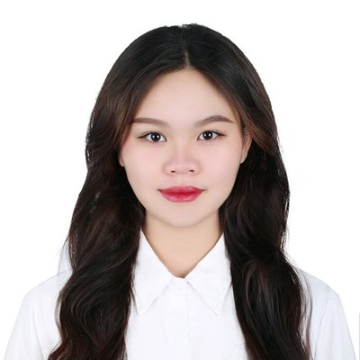
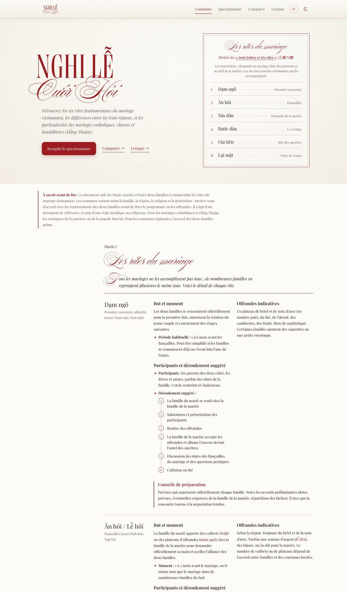
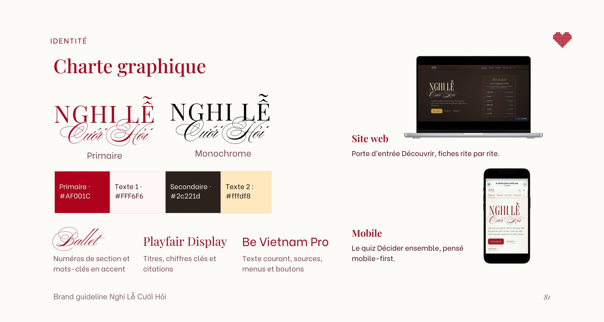

(Je suis)(PO · PM)(Produit · Projet)(FR · EN · VI)PhuongNgo
Vous avez 4 minutes ? Suivez le parcoursJe conçois des parcours utilisateur. Celui-ci vous fait découvrir mon travail en quatre minutes.
Projet phare

Nghi Lễ Cưới Hỏi
Un produit numérique bilingue qui aide les jeunes Vietnamiens et leurs parents à comprendre les rites du mariage, puis à décider ensemble, rite par rite, ce qu'ils gardent, adaptent ou laissent de côté.
Voir le site en ligne en vietnamien et en français
Le problème
Un mariage vietnamien se décide à deux générations. Combien de tráp ? Le sính lễ reste-t-il une négociation ? Les jeunes n'ont aucune source fiable pour comprendre les rites qu'on leur demande pourtant de trancher.
Les 8 étapes, selon la méthode Double Diamond
- Découvrir
- DocumenterVeilleUn rapport de veille : les rites, leurs variantes par région et religion, jusqu'au code Hồng Đức de 1470.
- ÉcouterRecherche utilisateurUne enquête bilingue en six axes. 9 répondants sur 15 vivent un désaccord familial concret.
- ComparerBenchmarkUn benchmark : The Knot, Zola, Marry.vn, réseaux sociaux, wedding planners. Personne ne relie le sens des rites à la décision en famille.
- Définir
- PivoterRepositionnementD'objets de déco vers un outil : « Découvrir » pour comprendre, « Décider ensemble » pour trancher.
- NommerNaming« Nghi lễ cưới hỏi », c'est ce que les gens tapent sur Google. Et « hỏi » veut aussi dire « demander ».
- Développer
- ConstruireMVPLe site : six rites, trois régions, trois traditions religieuses, un lexique, un questionnaire de 7 minutes.
- Livrer
- LancerGo-to-marketMise en ligne sur Netlify, référencement, puis appel aux retours de la communauté.
- DéfendreRestitutionLe rapport de veille en slides, avec mes notes de présentation, pour le rendu du 23 octobre.
Le produit
Le modèle économique
Gratuit pour les familles, financé par l'écosystème du mariage : partenaires mis en avant, Wedding Outline premium, affiliation. Mobile d'abord, avec Zalo comme porte d'entrée au Vietnam.
La charte graphique
Un rouge porte-bonheur, un brun profond et des blancs chauds. Playfair Display pour les titres, Ballet en accent calligraphié, Be Vietnam Pro pour le texte.

Mon projet phare couvre tout le cycle ; les autres montrent les étapes où j’ai eu le plus d’impact.
Produits et projets
Ma méthode
La même boucle sur chaque produit, du besoin flou à l'adoption mesurée.
Expérience
3 autres expériences au Vietnam
Formation
Vous aimez ce que vous voyez ? Découvrez mes autres créations dans ma galerie en ligne.